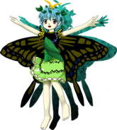

Título: Touhou Tenkuushou ~ Hidden Star in Four Seasons
Desenvolvedora: Team Shanghai Alice
Criador: ZUN
Data de lançamento: 11 de agosto de 2017
Plataforma: PC (Windows)
Gênero: Shoot 'em up (danmaku / bullet hell)
Descrição:
Touhou 16 é o décimo sexto jogo principal da série Touhou.
A história gira em torno de um fenômeno climático estranho,
onde as quatro estações do ano começam a aparecer fora de época
em diferentes regiões de Gensokyo.
Neve no verão, folhas de outono na primavera e flores no inverno
passam a surgir sem explicação.
Um incidente climático faz com que as estações do ano se misturem de forma anormal. Partes de Gensokyo passam a exibir características de diferentes épocas simultaneamente.
Reimu Hakurei, Marisa Kirisame, Aya Shameimaru e Cirno decidem investigar o fenômeno, cada uma buscando entender a origem da anomalia.
Durante a jornada, elas descobrem que a responsável pelo desequilíbrio é Okina Matara, uma deusa secreta com poder sobre os limites e as estações.
Okina observa Gensokyo das sombras e decide testar os habitantes através desse incidente, revelando sua influência oculta.
O jogo introduz o sistema de “Sub Season Release”, permitindo que o jogador utilize o poder das estações para atacar, defender ou liberar ataques especiais.
Reimu Hakurei (sacerdotisa do Santuário Hakurei)
Marisa Kirisame (maga humana)
Aya Shameimaru (tengu jornalista)
Cirno (fada do gelo)
Cada personagem pode escolher uma estação secundária, alterando padrões de ataque e estratégias durante a campanha.
